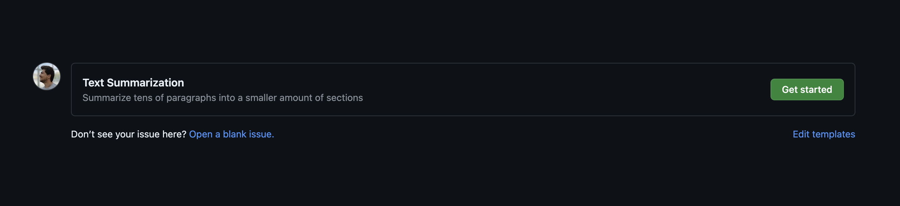
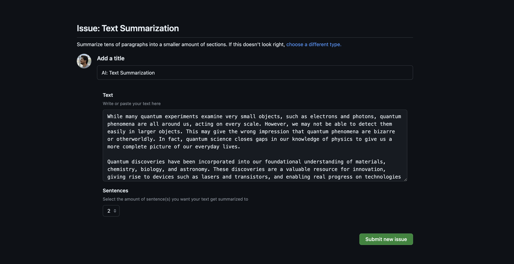

Tutorial
This page contains the features and implementations that you can have within your Python actions.
Action Inputs & Outputs
Action inputs and outputs must be defined inside the your-action/action.yml file first. The following example shows that our action receives only one input variable named endpoint.
In a workflow, you may want your action to accept some data as inputs. It can be done by specifying them as parameters of the action function. They must be specified with the right annotation types for type-casting.
In the following job step showcase, we're sending an API endpoint URL and a SSL status to our action and receiving it within the Python file.
steps:
- name: Requesting
uses: you/your-action
with:
endpoint: somewhere.com/api/endpoint
is_ssl: false
from pyaction import PyAction
workflow = PyAction()
@workflow.action()
def my_action(endpoint: str, is_ssl: bool) -> None:
# endpoint (str): somewhere.com/api/endpoint
# is_ssl (bool): False
PyAction uses Pydantic to..
Validate and parse the input parameter values based on their annotations. You can easily notice the difference with this small change applied to the above example's is_ssl annotation.
Writing a value into the workflow is as easy as reading it. Use the workflow.write() method to write as many variables as you want and access them within the workflow. Don't forget to define the output variables inside your action.yml file.
outputs:
first_name:
description: 'First Name'
last_name:
description: 'Last Name'
age:
description: 'Age'
from pyaction import PyAction
workflow = PyAction()
@workflow.action()
def my_action() -> None:
workflow.write(
{
"first_name": "John",
"last_name": "Doe",
"age": 20,
}
)
steps:
- name: Providing variables
id: provider
uses: you/your-action
- name: Echoing variables
run: |
echo ${{ steps.provider.outputs.first_name }} # = John
echo ${{ steps.provider.outputs.last_name }} # = Doe
echo ${{ steps.provider.outputs.age }} # = 20
In general, it would take three major steps to implement IO interactions within the custom actions.
- Defining the inputs/outputs inside the
action.ymlfile. - Reading the inputs from the action function parameters.
- Writing the values into the workflow with the
workflow.write()method.
Dependency Management
If your action is powered by some third-party Python packages, simply add them into the your-action/requirements.txt file.
Keep in mind..
Do not remove the pyaction dependency from the requirements.txt file as it is the initial package that your action requires to run.
Running Additional Commands
If your action requires some additional system dependencies or you want to execute some bash commands inside the action container, include them inside a your-action/script.sh file. It'll be executed before the your-action/requirements.txt installation.
your-action/
├── Dockerfile
├── README.md
├── action.yml
├── script.sh
├── main.py
└── requirements.txt
Local Testing
There is a run command that runs the main.py file in your action based on the variables defined within the your-action/.env. Ultimately, it shows a table filled with the variables available within the workflow.
Consider the following action.yml.
inputs:
name:
description: Full name
required: true
home_town:
description: Hometown address
required: true
Variables defined in the .env file are supposed to be the inputs of your action. Thus, they all have to be uppercase and start with INPUT_. If you want to test an action with those inputs, then the .env file would look like this.
The workflow.write() intends to write the variables into the GITHUB_OUTPUT on production, but when you run the action locally, the output will be streamed to the STDOUT instead of GITHUB_OUTPUT.
...
@workflow.action()
def my_action(name: str, home_town: str) -> None:
workflow.write(
{
"result": f"{name} lives in {home_town}!",
"phrase": f"{name} is also a Software Developer.",
},
)
Now, test your action with the following command.
This would be the result.
| Variable | Value | Type | Workflow Usage |
|---|---|---|---|
result |
John lives in Chicago! | <class 'str'> |
${{ steps.STEP_ID.outputs.result }} |
phrase |
John is also a Software Developer. | <class 'str'> |
${{ steps.STEP_ID.outputs.phrase }} |
Annotations
You can use pyaction.workflow.annotations module to throw annotations in the workflow page.
from pyaction.workflow import annotations
...
@workflow.action()
def my_action(name: str, home_town: str) -> None:
annotations.error("...")
annotations.warning("...")
annotations.notice("...")
And you'll see the annotations right above the pipeline execution panel.
IssueForm
Issue form templates allow developers to create specific structures for the issue openers.
You can define different input types, validations, default assignees, and default labels for your issue forms. GitHub Inc.
This capability makes it easier to use Issue Forms as the UI side of your services with the help of GitHub Actions. You define the inputs, users will fill them and your action will get triggered.
In PyAction, you are able to parse the issues that are created with Issue Forms and use the data inside them.
Creating an issue form
If you want to start using GitHub Issue Forms..
Check out this official tutorial on how you can make Issue Forms, different types, and validations for your repository.
Consider the following Issue Form configuration. It contains two fields. A textarea named Text and a dropdown field that contains a few numeric values named Sentences.
Head to the "Issues" tab of your repository. Try to create one and you'll see an issue template item called "Text Summarization".

Click "Get started" and you'll see an interface in the following form.

Now, the point is that when you create the issue, you can have a job triggered to read this issue body and process it. In the next section, we'll see how you can read the issue in your action.
Reading the issue inside the action
In order to retrieve the values set for the Text and Sentences fields, first we need to get the issue number. We should retrieve it inside the workflow, meaning we have to define an input parameter for this purpose.
inputs:
github_token:
description: The GitHub auth token
default: ${{ github.token }}
required: true
repository:
description: The repository name in the form of "<owner>/<repo>"
default: ${{ github.repository }}
required: true
issue_number:
description: The id of the issue
required: true
We also need github_token and repository inputs to authenticate and interact with GitHub and get the issue data that we need. They both have a default value so they don't need to be valued inside the workflow.
This is how we can get the issue number/ID and send it as an input parameter to the action.
on:
issues:
types: [opened]
...
steps:
- name: Running the action
uses: you/your-action
with:
issue_number: ${{ github.event.issue.number }}
Now, to serialize the issue data coming from the workflow, we have to use the IssueForm class.
from pyaction import PyAction
from pyaction.issues import IssueForm
workflow = PyAction()
@workflow.action()
def my_action(repository: str, issue_number: int, github_token: str) -> None:
user_input = IssueForm(repo=repository, number=issue_number, token=github_token).render()
# user_input (dict): {
# "Text": "While many quantum experiments examine very small..",
# "Sentences": "2"
# }
Testing
To test an action that uses Issue Forms, you should define the following three input variables inside your .env file.
INPUT_GITHUB_TOKEN is optional..
Notice that the INPUT_GITHUB_TOKEN is optional. If you want to pass the request rate limit or planning to read issues on private repositories, you have to generate one and define it. Otherwise, you can ignore the token parameter in the IssueForm class when initializing an object.
- Check Personal GitHub Access Token if you want more permissions.
The INPUT_ISSUE_NUMBER is the ID/number of an example issue that you want your action to work on. (probably an issue that's been created via Issue Forms)
The INPUT_REPOSITORY should contain your repository name in the form of github-username/repo.
Publishing in the Marketplace
GitHub Marketplace is a platform where tens of actions and GitHub Apps are being hosted and developed. You can also publish your actions created with PyAction there too.
To do so, make sure that your action's slug is a unique phrase. Thus, we have to check the following URLs and make sure they all end up being 404 pages.
https://github.com/<action_slug>https://github.com/orgs/<action_slug>https://github.com/marketplace/actions/<action_slug>
For the further few steps, I suggest you follow the official docs.